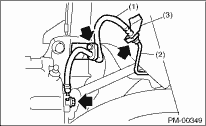
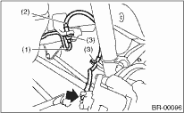
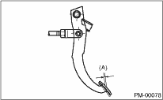
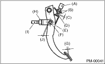
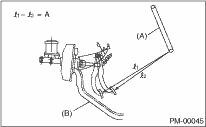
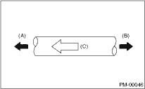

PERIODIC MAINTENANCE SERVICES > Brake Line
1. Check for scratches, swelling, corrosion, traces of fluid leakage on the brake hoses or pipe joints.
2. Check the possibility of adjacent parts interfering with brake pipes/hoses during driving, and loose connections/clamps.
3. Check any trace of fluid leakage, scratches, etc. on master cylinder, wheel cylinder and pressure control valve.
NOTE:
• When the brake fluid level in the reservoir tank is the specified limit or less, the brake warning light on the combination meter will illuminate.
• Visually check the brake hose for damage. (Use a mirror where it is difficult to see)

|
(1) |
Front brake hose |
|
(2) |
Front brake pipe |
|
(3) |
Clamp |

|
(1) |
Brake pipe |
|
(2) |
Rear brake hose |
|
(3) |
Clamp |
1. Check the free play of brake pedal with a force of 10 N (1 kgf, 2 lb) or less.
Brake pedal free play:
0.5 — 2.0 mm (0.02 — 0.08 in)

|
(A) |
Pedal free play |
2. If the free play is out of the specification values, adjust the brake pedal as follows.
(1) Make sure the engine is off. (No vacuum is applied to brake booster.)
(2) There should be play between brake booster clevis and pin at brake pedal installing portion.
[Depress brake pedal pad with a force of 10 N (1 kgf, 2 lbf) or less to a stroke of 0.5 to 2.0 mm (0.02 to 0.08 in).]
(3) Depress the surface of brake pad by hand.
(4) If there is no free play between clevis pin and clevis, turn brake switch adjusting nut until the clearance between stopper and screw of brake switch becomes 0.3 mm (0.012 in).

|
(A) |
Brake switch |
|
(B) |
Adjusting nut |
|
(C) |
0.3 mm (0.012 in) |
|
(D) |
Stopper |
|
(E) |
Clevis pin |
|
(F) |
Clevis |
|
(G) |
Pedal free play |
|
(H) |
Lock nut |
|
(I) |
Brake booster operating rod |
|
(J) |
Play at pin |
3. Check the pedal stroke.
While the engine is idling, depress the brake pedal with a 490 N (50 kgf, 110 lbf) load and measure the distance between the brake pedal and steering wheel. With the brake pedal released, measure the distance between pedal and steering wheel again. The difference between the two measured values must be the specified value or less. If the measured value is the specification or more, there is possibility of entering air in hydraulic unit.
Brake pedal stroke A:
For Australia model
105 mm (4.13 in)/ 490 N (50 kgf, 110 lbf) or less
Except for Australia model
90 mm (3.54 in)/ 490 N (50 kgf, 110 lbf) or less

|
(A) |
Steering wheel |
|
(B) |
Toe board |
4. Check to see if air is in the hydraulic brake line by the feel of pedal operation. If air appears to exist in the line, bleed it from the system.
5. Check for even operation of all brakes, using a brake tester or by driving the vehicle for a short distance on a straight road.
1. With the engine off, depress the brake pedal several times applying the same pedal force. Make sure the travel distance should not change.
2. With the brake pedal depressed, start the engine. Make sure the pedal should move slightly toward the floor.
3. With the brake pedal depressed, stop the engine and keep the pedal depressed for 30 seconds. Make sure the pedal height should not change.
4. A check valve is built into the vacuum hose. Remove the vacuum hose to inspect function of the check valve.
Blow air into vacuum hose from its brake booster side. Check that the air flows out to the engine side of the air hose. Next blow air into hose from engine side: Check that the air does not flow out to the brake booster side.
Replace the both check valve and vacuum hose if the check valve is faulty. Engine side of vacuum hose is indicated by marking “ENG” as shown.

|
(A) |
Engine side |
|
(B) |
Brake booster side |
|
(C) |
ENG |
5. Check the vacuum hose for cracks or other damage.
CAUTION:
When installing the vacuum hose on the engine and brake booster, do not use soapy water or lubricating oil on their connections.
6. Check that the vacuum hose is securely mounted.